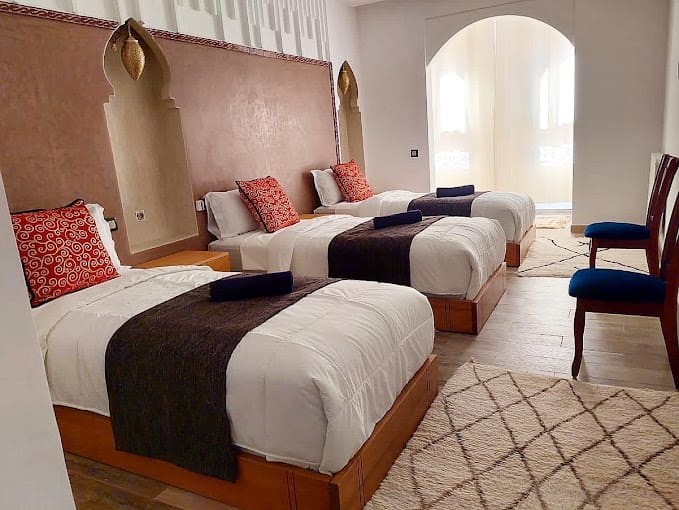
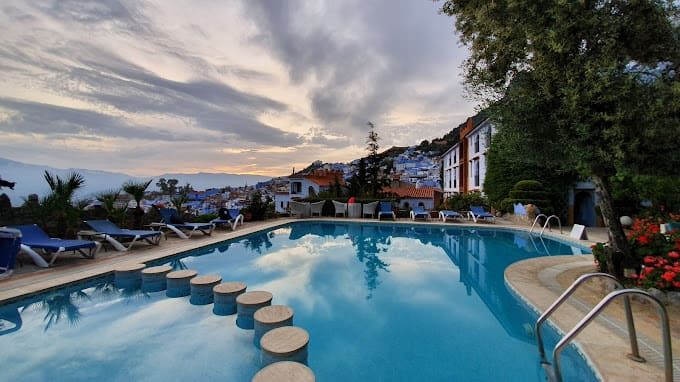

The short answer: Morocco is a wonderful family destination. Children are welcomed warmly, and the country is full of things kids genuinely love: camels, sand dunes, goats in argan trees, snake charmers and riads with plunge pools. The keys to a happy family trip are an unhurried route of 8 to 12 days, short driving days broken by stops, family-friendly rooms booked in advance, and a private vehicle so you set the pace rather than a group schedule.
Families often ask us whether Morocco is "too much" for children: too far, too hot, too unfamiliar. In our experience the opposite is usually true. Morocco is close enough to feel exotic without being exhausting, Moroccans adore children, and the trip has a natural story arc that holds young attention: cities, then mountains, then the desert. The difference between a magical family holiday and a tiring one comes down almost entirely to planning and pacing.
Why Morocco Works So Well for Families
- Children are genuinely welcome. Family is at the center of Moroccan life. Waiters, riad staff and camel guides will go out of their way for your children.
- The adventure is built in. Riding a camel to a desert camp, sleeping in a tent among the dunes and sandboarding at sunrise feel like a storybook to a ten-year-old.
- It's varied. Within a week you can move from souks to snow-capped mountains to the Sahara, so no two days feel the same.
- It's educational without trying. Roman ruins at Volubilis, a thousand-year-old medina in Fes, and the craft of a Berber carpet weaver all bring history to life.
Planning by Age: Toddlers, Children and Teens
Toddlers and babies (0 to 4)
Very doable, with adjustments. Keep driving days short, base yourself in fewer places, and choose accommodation with ground-floor or easily accessible rooms, since many riads have steep stairs and open courtyards. Bring a lightweight carrier rather than a stroller: medina lanes are narrow, crowded and often stepped. If you need a child seat for the car, tell your tour operator well in advance so it can be confirmed before you arrive.
Children (5 to 12)
The sweet spot. Children this age love the camel ride, the camp and the animals, and they're old enough to manage a few longer drives with the right stops. Plan some downtime each day, such as an afternoon by a pool, so the excitement doesn't become overload.
Teens (13 and up)
Teens tend to love the active side: sandboarding, quad bikes or 4x4 runs in the dunes, hiking in the Atlas, a cooking class, surfing near Essaouira or Taghazout. Giving them a role in choosing activities makes a big difference.

How to Pace a Family Route
The single most common mistake we see in family itineraries is trying to cover too much ground. Morocco looks compact on a map, but the drive from Marrakech to the Merzouga dunes is around 550 km of mountain and desert road. Adults can manage that in two long days. Young children are much happier when the journey is broken up.
- Aim for 8 to 12 days for a first family trip that includes the desert.
- Limit drives to around 4 to 5 hours where possible, with a stop every 90 minutes or so.
- Stay two nights in key places, such as Marrakech, the desert and Fes, so you're not packing every morning.
- Use the drive as part of the fun. Stops at Ait Benhaddou (a real film set), the Todra Gorge's towering walls and a nomad family's tent turn driving days into exploring days.
This is where a private driver makes the biggest difference for families. You decide when to stop for a bathroom, a snack or a sleeping toddler, which no group tour can offer. For more on how this works, see our guide to hiring a private driver in Morocco.
Experiences Children Remember
- A camel trek into the Sahara and a night at a desert camp. See what the camel trek at Merzouga is really like.
- Sandboarding down the Erg Chebbi dunes at sunrise.
- Goats in argan trees on the road between Marrakech and Essaouira, and a visit to a women's argan oil cooperative.
- Gnawa music in Khamlia, a village near Merzouga, where children are often invited to join the drumming.
- A visit to a nomad family near the dunes, with tea and fresh bread baked in the sand.
- Barbary macaques in the cedar forest near Azrou, on the route between Fes and the desert. Read our Azrou monkeys guide.
- A cooking class making tagine and Moroccan bread together.
- Exploring Chefchaouen's blue lanes, which children treat like a treasure hunt.
Where to Stay as a Family
Accommodation has a bigger impact on a family trip than on almost any other kind of holiday. A few things to look for:
- Family rooms or suites: triple or quadruple rooms, or connecting rooms. Many riads have only a handful of rooms, so book early.
- A pool. Even a small courtyard plunge pool is a lifesaver on a hot afternoon.
- Safety around courtyards and roof terraces, which are beautiful but often have low walls. Ask about them if you're traveling with small children.
- Desert camps with private tents that have en-suite bathrooms, proper beds and enough space for the whole family together.

Our guide to choosing between a riad or a hotel in Morocco goes into more detail. On our private journeys, prices are per person and drop noticeably for triple and quadruple rooms, which suits families well. For example, our 7-day Grand Sahara tour is €1,260 per person in a double room and €802 per person in a quadruple room.
The Best Time to Travel With Children
- Spring (March to May) and autumn (late September to November) are ideal: warm days, cool nights and comfortable temperatures in the desert.
- Easter and fall breaks fit these windows perfectly, but they're popular, so book camps and riads early.
- Summer (June to August) is very hot inland. If school holidays mean summer is your only option, focus on the Atlantic coast and the mountains, and time desert activities for sunrise and sunset.
- Winter (December to February) has sunny days but cold desert nights. Read our Morocco in winter guide.
Practical Tips for Parents
- Food: Moroccan food is mild rather than spicy. Bread, grilled chicken, omelettes, couscous, fresh orange juice and fruit please most children. Pack familiar snacks for the drives.
- Water and hygiene: Bottled water only, and hand sanitizer before every meal.
- Sun: Hats, sunglasses, high-factor sunscreen and long, light sleeves, even in cooler months.
- Health: Pack a small kit with rehydration salts, children's pain relief and anything your doctor recommends, plus travel insurance that covers every family member.
- Attention: Strangers may touch your children's hair or cheeks as a sign of affection. If your child is uncomfortable, a smile and a gentle step back is perfectly polite.
- Documents: Each child needs their own passport. If only one parent is traveling, carry a signed consent letter from the other.
A Sample 10-Day Family Itinerary
- Day 1: Arrive in Marrakech. Private transfer to your riad and a relaxed evening.
- Day 2: Marrakech with a local guide: gardens, souks, and Jemaa el-Fnaa at dusk.
- Day 3: Over the High Atlas to Ait Benhaddou, and on to the Dades Valley.
- Day 4: The Todra Gorge, then camels into the Erg Chebbi dunes for the first desert night.
- Day 5: A full day in the desert: sandboarding, a nomad family, Gnawa music in Khamlia. A second night at camp.
- Day 6: North through the Ziz Valley to Fes, broken up with stops along the way.
- Day 7: Fes with a local guide: the medina, the tanneries and craft workshops.
- Day 8: Day trip to Chefchaouen, the Blue City.
- Days 9 to 10: Travel on to your departure city, or add Essaouira for beach time.
This is close to our 9-day Fes to Marrakech journey via Chefchaouen, run in reverse. Every family is different, though, so our tailor-made trips are built around your children's ages, your pace and the rooms you need.
Plan Your Family's Morocco Adventure
A family trip to Morocco can be the holiday your children talk about for years. Tell us your children's ages, your travel dates and what your family enjoys, and our local team will put together a private itinerary that fits.